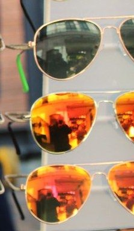

Güneş gözlüğü: önce cam, sonra çerçeve
Güneş gözlüğünü çerçevesiyle beğeniriz ama asıl işi cam görür: rengi, koyuluğu, polarize olup olmadığı, UV filtresi. Bu sayfada camı seçmenin yolunu anlatıyoruz. Aşağıdaki sahnede farkı kendiniz görün.
- Cam rengi
- Filtre kategorisi
- Polarize
- UV etiketi
- Numaralı güneş camı

Camdan bakın
Aşağıdaki sahneye bir güneş gözlüğünün içinden bakıyorsunuz. Cam rengini, filtre kategorisini ve polarizeyi değiştirin: deniz, yol ve arabanın camı nasıl değişiyor?
Şeffaf cam · kategori 0 · polarize kapalı
Şeffaf cam: numaralı gözlüklerin camı. Renk vermez; ışık olduğu gibi geçer.
Kategori 0: ışığın yüzde 80 ile 100 arasını geçirir.
Polarize kapalı: sudaki ve yoldaki parlak yansımalar gözü kamaştırır.
Sahne temsili bir çizimdir; gerçek camların görünümü ışığa, cama ve kaplamaya göre değişir.
Hangi renk ne yapar?
Cam rengi yalnız görünüş meselesi değildir; gördüğünüz renkleri ve kontrastı değiştirir. Koyuluk ise ayrı bir konudur: aynı renk açık da olabilir, koyu da.
Renk seçerken iki şeyi düşünün: gözlüğü en çok nerede takacaksınız ve renkleri ne kadar doğal görmek istiyorsunuz. Araç kullanan biri için trafik ışıklarının rengini doğru görmek önemlidir; denizde ise parlamayı kesmek öne çıkar.
Karar vermeden önce deneyin: mağazada camı takıp kapıdan dışarı bakın.
Gri
Renkleri en az değiştiren ton. Işığı her renkte yaklaşık eşit kısar; uzun yolda ve günlük kullanımda yormadan bakılır.
GünlükAraçDenizKahve ve bronz
Sıcak bir ton verir, kontrastı ve derinlik algısını artırır. Değişken ışıkta ve bulutlu havada rahat hissettirir.
AraçDeğişken havaSporYeşil
Renkleri doğala yakın tutar, kontrastı hafifçe artırır. Gri ile kahve arasında bir denge gibi düşünebilirsiniz.
GünlükŞehirAynalı kaplama
Camın dış yüzündeki kaplama ışığın bir kısmını yansıtır. Altında genellikle gri ya da kahve bir cam bulunur. Parmak izini ve çiziği daha çok belli eder; kılıfında taşıyın.
DenizKarÇok parlak ışıkDegrade
Üstte koyu, altta açık. Araç içinde göstergeleri görmeyi kolaylaştırır, şehirde şık durur. Deniz ve kar gibi alttan yansıyan ışığın güçlü olduğu yerlerde tek renk cam daha uygundur.
ŞehirAraçSarı ve turuncu
Düşük ışıkta kontrastı artırır; kapalı havada ve sporda kullanılır. Çoğu açık kategoridedir; parlak yaz güneşi için tek başına yetmeyebilir.
Kapalı havaSpor
Filtre kategorisi: 0'dan 4'e
Bir güneş gözlüğü camının ne kadar ışık geçirdiği 0 ile 4 arasında bir kategoriyle belirtilir. Bu numara çoğunlukla sapın iç yüzünde ya da etikette yazar.
| Kategori | Geçen ışık | Ne zaman | Gündüz araç kullanırken |
|---|---|---|---|
| 0 | yüzde 80–100 | İç mekân, kapalı hava; şeffaf ve çok açık renkli camlar. Güneş koruması sağlamaz. | Uygun |
| 1 | yüzde 43–80 | Hafif güneş, bulutlu hava. | Uygun |
| 2 | yüzde 18–43 | Orta şiddette güneş, şehir içi, günlük kullanım. | Uygun |
| 3 | yüzde 8–18 | Parlak yaz güneşi, deniz ve kumsal. | Uygun |
| 4 | yüzde 3–8 | Kar, buzul, yüksek dağ gibi çok parlak ortamlar. | Kullanılmaz |
Aralıklar, güneş gözlükleri için kullanılan EN ISO 12312-1 standardına göredir. Gece araç kullanırken güneş gözlüğü takılmaz.
Polarize ne işe yarar?
Güneş ışığı suya, ıslak yola ya da bir aracın camına çarpıp yansıdığında büyük ölçüde yatay yönde titreşen bir parlamaya dönüşür. Polarize cam bu yatay ışığı süzer: parlama azalır, suyun altı ve yolun dokusu daha net görünür.
Camın polarize olup olmadığını anlamanın kolay bir yolu var: telefonunuzun ekranına bakarken başınızı yana yatırın. Ekran belirgin biçimde kararıyorsa cam büyük olasılıkla polarizedir.
Aynı nedenle bazı araç ekranları polarize camla koyu ya da renkli görünebilir; denerken bu ayrıntıya da bakın.
Etikette ne yazmalı?
UV400 ya da UV filtresi
400 nanometreye kadar morötesi ışığın süzüldüğünü gösterir.
CE işareti
Avrupa'da satılan güneş gözlüklerinin ilgili standarda uygunluğunu belirtir.
Filtre kategorisi
0 ile 4 arası bir numara; camın ne kadar koyu olduğunu söyler.
Koyu cam, UV koruması demek değildirCamın koyuluğu ile UV filtresi ayrı özelliklerdir. Koyu ama UV filtresi olmayan bir camın ardında göz bebeği büyür ve göze daha çok morötesi ışık girebilir. Etiketi okuyun; emin değilseniz sorun.
Nerede takacaksınız?
Güneş gözlüğünü en çok nerede kullanacağınızı seçin; kategori, renk ve polarize için genel bir yol haritası çıkaralım. Son kararı mağazada deneyerek verin.
Bir ortam seçin
Seçiminize göre filtre kategorisi, cam rengi, polarize ve çerçeve için öneriler burada görünür. Önerilen camı yukarıdaki sahnede de deneyebilirsiniz.
Merhaba Kurtköy Optik, güneş gözlüğü bakıyorum.
Numaralı gözlük kullanıyorsanız
Güneşte de net görmenin birkaç yolu var. Hangisinin size uyduğu reçetenize, çerçevenize ve günlük alışkanlığınıza bağlı; reçetenizle gelin, birlikte bakalım.
Numaralı güneş camı
Güneş gözlüğü çerçevesine, reçetenize göre renkli cam takılır. Güneşte ayrı bir gözlük taşırsınız.
Işıkla koyulaşan (fotokromik) cam
İçeride açık, güneşte koyu. Tek gözlükle idare etmek isteyenler için. Araç içinde genellikle az koyulaşır.
Takma güneş camı
Numaralı gözlüğün önüne takılan renkli cam. Her çerçeveye uymaz; modeline bakmak gerekir.
Güneş gözlüğü bakımı
- Aracın torpidosunda ya da ön camın altında bırakmayın; sıcak, çerçeveyi ve kaplamayı yıpratabilir.
- Camı tişörtle ya da kâğıt peçeteyle silmeyin. Ilık su, bir damla bulaşık deterjanı ve mikrofiber bez yeter.
- Gözlüğü başınızın üstünde taşımayın; saplar açılır, gözlük yamulur.
- Kumun ya da masanın üstüne camı aşağı gelecek şekilde koymayın.
- Çantada kılıfıyla taşıyın; aynalı kaplama çizilmeye karşı özellikle hassastır.
- Sap gevşedi, burunluk düştü mü? Tamir sayfasına bakın.
Çocuklar içinÇocukların gözleri güneşe karşı daha hassastır. Çocuk güneş gözlüğünde de UV filtresi ve kategori bilgisine bakın; göz sağlığıyla ilgili sorularınız için göz doktorunuza danışın.
Denemeden karar vermeyin
Camı takın, kapıdan dışarı bakın. Pazartesiden cumartesiye 09:00–19:30, pazar 12:00–19:00 Kurtköy'deyiz.